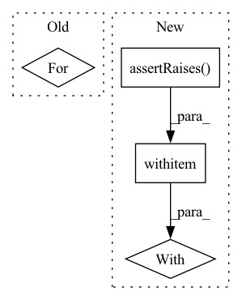

Pattern ID :41660
Before Change
server_config["model-repository"] = MODEL_REPOSITORY_PATH
// Create server, start , wait, and stop
for factory in SERVER_FACTORIES:
self.server = factory.create_server(
model_path=MODEL_LOCAL_PATH,
version=TRITON_VERSION,
config=server_config)After Change
config=server_config)
// Set CUDA_VISIBLE_DEVICES and start the server
with self .assertRaises(TritonModelAnalyzerException,
msg="Expected to exceed num_retries"):
self.server.wait_for_ready()
self.server.start()
self.server.wait_for_ready()In pattern: SUPERPATTERN
Frequency: 4
Non-data size: 4
Instances Fragment ID: 116960941
Project Name: triton-inference-server/model_analyzer
Commit Name: 89533b0906860b8813da0f64cddeea8c7ed067df
Time: 2020-11-24
Author: asramesh@nvidia.com
File Name: tests/test_triton_server.py
M Class Name: TestTritonServerMethods
N Class Name: TestTritonServerMethods
M Method Name: test_start_wait_stop_gpus(1)
N Method Name: test_start_wait_stop_gpus(1)
M Parent Class: unittest.TestCase
N Parent Class: unittest.TestCase
M File Name: tests/test_triton_server.py
N File Name: tests/test_triton_server.py
M Start Line: 138
M End Line: 151
N Start Line: 142
N End Line: 169
Before Change
server_config["model-repository"] = MODEL_REPOSITORY_PATH
// Run for both types of environments
for factory in SERVER_FACTORIES:
self.server = factory.create_server(
model_path=MODEL_LOCAL_PATH,
version=TRITON_VERSION,
config=server_config)After Change
model_path=MODEL_LOCAL_PATH,
version=TRITON_VERSION,
config=server_config)
with self .assertRaises(
AssertionError,
msg="Expected AssertionError for trying to create"
"server without specifying model repository."):
self.server = TritonServerFactory.create_server_local(
version=TRITON_VERSION, config=server_config)
def test_start_wait_stop_gpus(self): Fragment ID: 116960943
Project Name: triton-inference-server/model_analyzer
Commit Name: 89533b0906860b8813da0f64cddeea8c7ed067df
Time: 2020-11-24
Author: asramesh@nvidia.com
File Name: tests/test_triton_server.py
M Class Name: TestTritonServerMethods
N Class Name: TestTritonServerMethods
M Method Name: test_create_server(1)
N Method Name: test_create_server(1)
M Parent Class: unittest.TestCase
N Parent Class: unittest.TestCase
M File Name: tests/test_triton_server.py
N File Name: tests/test_triton_server.py
M Start Line: 114
M End Line: 125
N Start Line: 111
N End Line: 137
Before Change
logger = CometLogger(workspace=self.workspace, api_key=self.api_key)
logger.log_parameters(params)
for param, val in params.items():
self.assertEqual(logger.experiment.get_parameter(param), val)
logger.log(metrics, step=1)
for metric, val in metrics.items():After Change
{1: "a", 2: "b"} // dict with non-str key
]
for item in wrong_type:
with self .assertRaises(ValueError):
logger.log(item, step=1)
def test_logger_preprocess_image(self, ):
Test CometLogger preprocess_image function. Fragment ID: 116960944
Project Name: uetailab/uetai
Commit Name: 4ff2e135016e6480d70c39f76c074f762ee9f80f
Time: 2022-04-11
Author: manhdung20112000@gmail.com
File Name: tests/loggers/test_comet_logger.py
M Class Name: TestCometLogger
N Class Name: TestCometLogger
M Method Name: test_logger_log(1)
N Method Name: test_logger_log(1)
M Parent Class: unittest.TestCase
N Parent Class: unittest.TestCase
M File Name: tests/loggers/test_comet_logger.py
N File Name: tests/loggers/test_comet_logger.py
M Start Line: 73
M End Line: 115
N Start Line: 89
N End Line: 119
Before Change
client_config = TritonClientConfig()
// Run for both types of protocols
for factory, url in CLIENT_TEST_PROTOCOLS:
client_config["url"] = url
client = factory.create_client(config=client_config)
// Try to create a client without specifying url and expect errorAfter Change
client = TritonClientFactory.create_http_client(config=client_config)
// Try to create a client without specifying url and expect error
with self .assertRaises(AssertionError,
msg="Expected AssertionError for trying to "
"create client without specifying url."):
client_config["url"] = None
client = TritonClientFactory.create_http_client(
config=client_config)
Fragment ID: 116960945
Project Name: triton-inference-server/model_analyzer
Commit Name: 89533b0906860b8813da0f64cddeea8c7ed067df
Time: 2020-11-24
Author: asramesh@nvidia.com
File Name: tests/test_triton_client.py
M Class Name: TestTritonClientMethods
N Class Name: TestTritonClientMethods
M Method Name: test_create_client(1)
N Method Name: test_create_client(1)
M Parent Class: unittest.TestCase
N Parent Class: unittest.TestCase
M File Name: tests/test_triton_client.py
N File Name: tests/test_triton_client.py
M Start Line: 94
M End Line: 105
N Start Line: 91
N End Line: 114